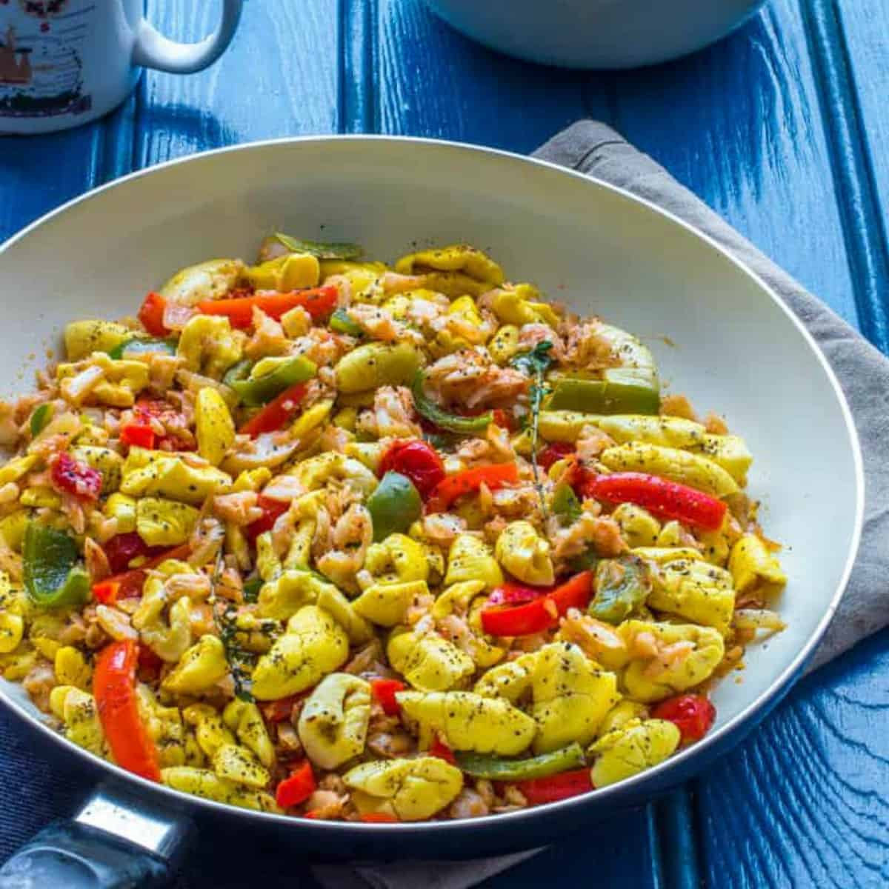

Ackee and Saltfish

Description
Introduced during the colonial times to the Jamaican breakfast table by enslaved West African's who combined their ackee fruit with the local salt fish.
The perfect mix of African and Jamaican foods now famously known as Ackee and Saltfish.Saltfish is a white fish; usually cod, haddock or pollock, dried and salted to preserve it. You may hear it called salt fish, salt cod or dry salted codfish.
The drying and salting method preserves the fish for over a year without refrigerating, which is one of the reasons it became a popular staple worldwide in the 17th century.Ackee is a Jamaican fruit rich in nutrition, especially protein and vitamin C. Fresh ackee is a pear-shaped fruit with 2-4 openings that will fully open when ripe and ready to pick. Ackee and saltfish is often served at breakfast or brunch with fried dumplings. Alternatively, serve with rice and peas for dinner.
Ingredients
- 200 g Saltfish salt cod
- Fresh Water
- 1 tablespoon Coconut / Vegetable / Sunflower Oil
- 1 small Onion finely chopped
- 2 cloves Garlic finely chopped
- 2 Spring Onions
- 3 sprigs Thyme leaves only
- 1/2 Scotch Bonnet Pepper Add more if you like it hot
- 1 Orange Pepper Red or Green can be used
- 1 large Tomato diced
- 2 teaspoon Jerk Seasoning or All purpose seasoning
- 540 grams Canned Ackee (340 grams drained)
- Black Pepper to taste
- 1 Lime To Serve
Steps
- Add cold water and saltfish into a pan, bring to a boil.
- Remove water and repeat again with fresh water.
- Shred the fish into smaller pieces using two forks.
- In a large pan, over medium heat, fry onions in oil for 4 minutes.
- Add garlic and scotch bonnet pepper with jerk seasoning for 2 minutes
- Add orange pepper, tomato and the spring onions, stir through for 2 minutes.
- Add the boiled saltfish, thyme leaves stir through.
- Finally add the ackee, stir less often and very gently from now on to stop the ackee breaking up too much.
- Serve with rice and peas and topped with extra spring onions, season to taste with black pepper. Add a wedge of lime to serve.